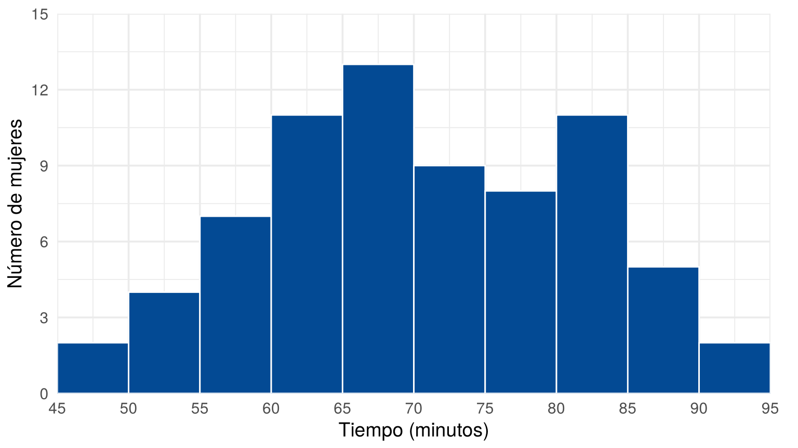
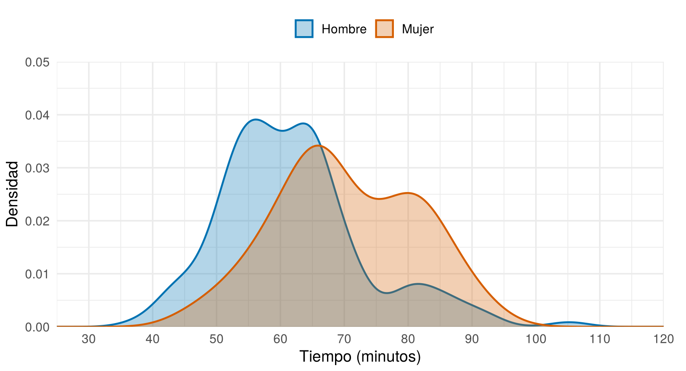
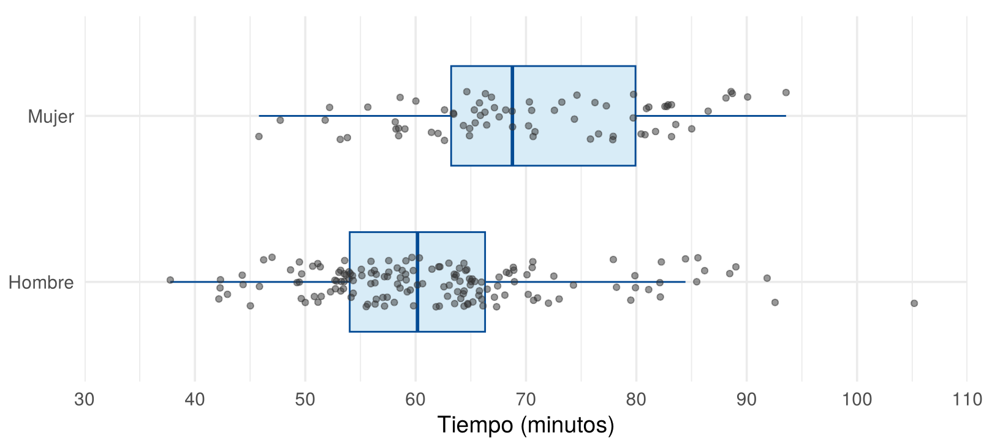
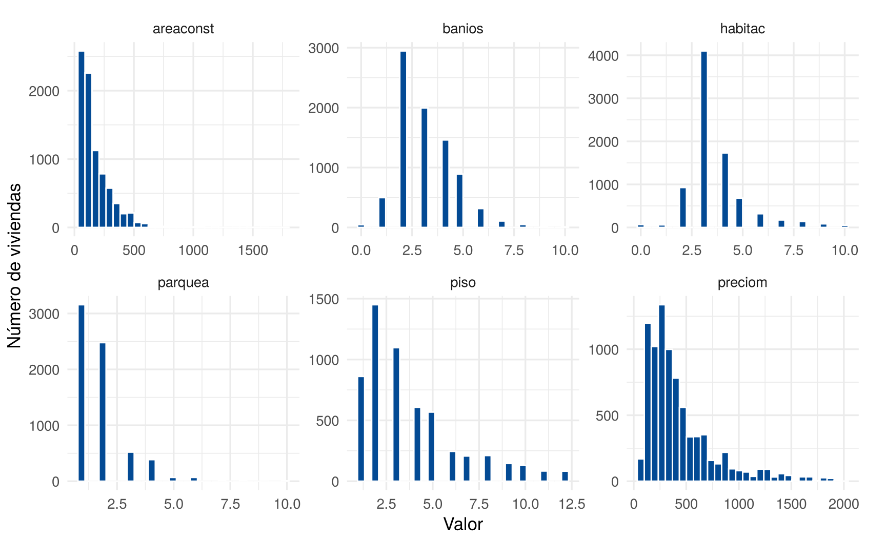
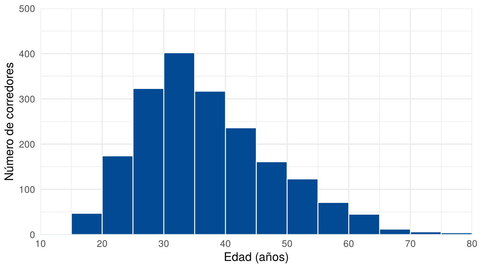
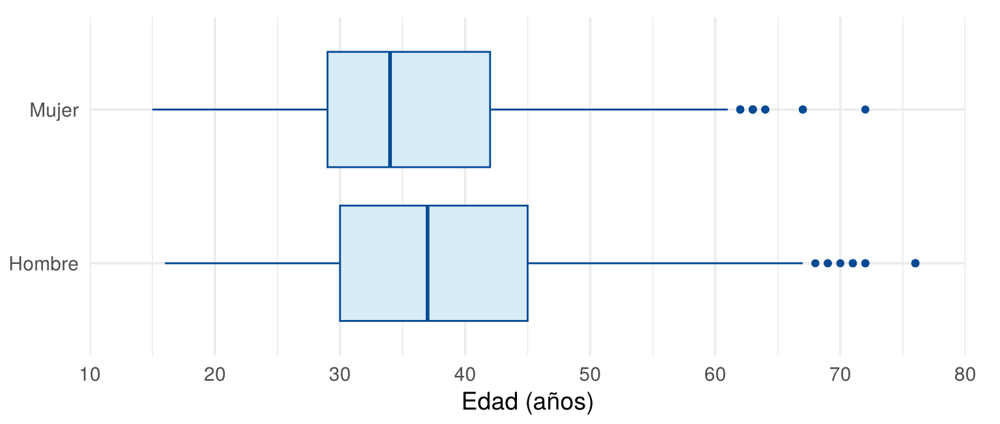
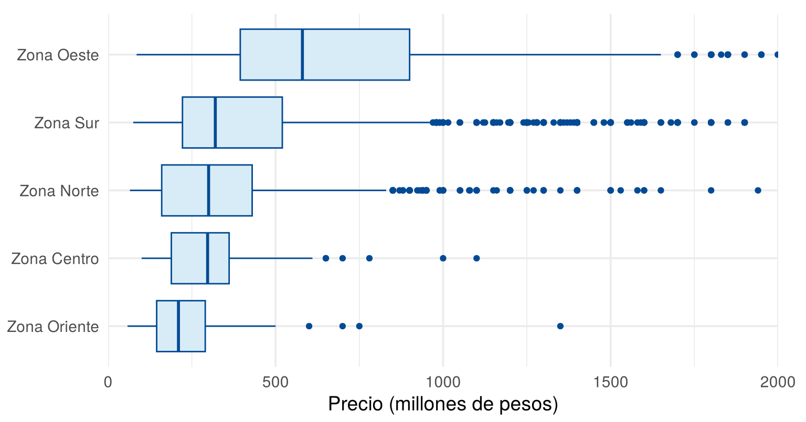

Para representar variables cuantitativas se usan gráficos que muestran las principales características de su distribución: el centro, la dispersión y la forma. Esta página presenta los tres gráficos más usados, cómo construirlos e interpretarlos: el histograma, la curva de densidad y el gráfico de cajas. Para ver más opciones, cada sección enlaza a From Data to Viz.
Esta página usa CarreraLuz22 y
vivienda_faltantes, del paquete
paqueteMETODOS, y los paquetes ggplot2 y
tidyr. Los bloques de código se ejecutan en orden, porque
algunos usan objetos creados en bloques anteriores.
library(paqueteMETODOS)
data("CarreraLuz22")
data("vivienda_faltantes")library(ggplot2)Los ejemplos usan el tiempo de carrera, en minutos, de la categoría Veteranos B:
veteranos <- subset(CarreraLuz22, categoria == "4. Veteranos B")
veteranos$minutos <- veteranos$timerun / 60
mujeres <- veteranos$minutos[veteranos$sex == "Mujer"]
hombres <- veteranos$minutos[veteranos$sex == "Hombre"]
c(mujeres = length(mujeres), hombres = length(hombres))mujeres hombres
72 155 ¿Para qué sirve? Para ver la forma de la distribución de una variable numérica: la simetría o asimetría, las modas y la dispersión. Representa la frecuencia de los datos en intervalos o clases.
¿Cuántas clases usar? Se recomienda usar entre 7 y
15 clases. En R, hist() parte de la
regla de Sturges, que estima el número de clases \(k\) a partir del número de datos \(n\):
\[ k = \lceil \log_2(n) + 1 \rceil \]
donde \(\lceil \cdot \rceil\) indica
redondear hacia arriba. Con los 72 tiempos de las mujeres, la regla
sugiere 8 clases. hist() usa ese número solo como
sugerencia y ajusta los cortes a valores redondos, y aquí produce 10
clases de 5 minutos:
ceiling(log2(72) + 1)[1] 8clases <- hist(mujeres, plot = FALSE)
clases$breaks [1] 45 50 55 60 65 70 75 80 85 90 95clases$counts [1] 2 4 7 11 13 9 8 11 5 2¿Cómo se hace? Con ggplot2 se fijan los
cortes con breaks. Conviene usar límites enteros, porque
describen mejor el fenómeno.
cortes <- seq(45, 95, 5)
datos_mujeres <- data.frame(minutos = mujeres)
ggplot(datos_mujeres, aes(x = minutos)) +
geom_histogram(breaks = cortes, fill = "#034A94", color = "white") +
scale_x_continuous(limits = c(45, 95), breaks = cortes, expand = c(0, 0)) +
scale_y_continuous(limits = c(0, 15), breaks = seq(0, 15, 3), expand = c(0, 0)) +
labs(x = "Tiempo (minutos)", y = "Número de mujeres") +
theme_minimal(base_size = 14) +
theme(plot.margin = margin(10, 20, 5, 5))
Tiempos de las mujeres de la categoría Veteranos B
¿Cómo se interpreta? Cada barra indica cuántos datos caen en un intervalo. Se observan el centro, la dispersión, la forma y los valores alejados. En la figura:
(65,70] y
(80,85]. Esto podría indicar dos grupos con tiempos típicos
distintos, pero con 72 datos es solo una hipótesis.Un intervalo como (65,70] no incluye el 65, pero sí el
70. Este es el comportamiento de hist() y
cut() por defecto.
¿Qué mide el eje vertical? Puede mostrar tres medidas. La frecuencia relativa divide la frecuencia entre el total de datos, y la densidad divide la frecuencia relativa entre la amplitud del intervalo:
\[ f_r = \frac{f}{n} \qquad \text{y} \qquad d = \frac{f_r}{\text{amplitud}} \]
En el intervalo (65,70], la frecuencia relativa es \(13/72 \approx 0.181\) y la densidad es
\(0.181/5 \approx 0.036\). Como todas
las clases tienen la misma amplitud, las tres medidas dan un gráfico con
la misma forma.
¿Qué cuidados tener? El aspecto cambia con el ancho de los intervalos. Si son muy angostos, aparece mucho ruido, y si son muy anchos, se pierden detalles. Por eso conviene probar varios (Wilke, 2019; Holtz y Healy). Los intervalos deben tener la misma amplitud, y no debe confundirse con un gráfico de barras.
Ver más: histograma y ancho de los intervalos.
¿Para qué sirve? Para ver la forma de una distribución con una curva suave, y para comparar pocos grupos. Se construye con una estimación kernel: a cada dato se le asigna una curva pequeña, llamada kernel, y luego se suman todas las curvas. El ancho de banda es el grado de suavizado.
¿Cómo se hace? Se usa geom_density().
Para comparar grupos, las curvas se superponen con transparencia usando
alpha.
ggplot(veteranos, aes(x = minutos, fill = sex, color = sex)) +
geom_density(alpha = 0.3, linewidth = 0.8) +
scale_fill_manual(values = c("Hombre" = "#0072B2", "Mujer" = "#D55E00")) +
scale_color_manual(values = c("Hombre" = "#0072B2", "Mujer" = "#D55E00")) +
scale_x_continuous(limits = c(25, 120), breaks = seq(30, 120, 10), expand = c(0, 0)) +
scale_y_continuous(limits = c(0, 0.05), breaks = seq(0, 0.05, 0.01), expand = c(0, 0)) +
labs(x = "Tiempo (minutos)", y = "Densidad", fill = NULL, color = NULL) +
theme_minimal(base_size = 14) +
theme(legend.position = "top", plot.margin = margin(10, 20, 5, 5))
Curvas de densidad de los tiempos por sexo
¿Cómo se interpreta? La cima indica dónde se concentran los datos, el ancho general indica la dispersión y la forma muestra la simetría, las colas largas o los picos múltiples. En la figura, los hombres se ubican en tiempos menores, con una cola hacia la derecha. La curva de las mujeres es más baja y aplanada, y está desplazada hacia tiempos mayores.
¿Qué cuidados tener? La curva depende del ancho de banda, y con pocos datos puede ser engañosa (Wilke, 2019). Con más de tres o cuatro grupos, el gráfico se vuelve confuso (Holtz y Healy).
Ver más: densidad, crestas (ridgeline) y demasiadas distribuciones.
¿Para qué sirve? Para resumir la distribución con la mediana, los cuartiles y los datos atípicos, y para comparar grupos. Los indicadores de posición explican cómo se construye. Un dato es atípico si queda fuera de estos límites:
\[ LI = Q_1 - 1.5 \times RIC \qquad \text{y} \qquad LS = Q_3 + 1.5 \times RIC \]
donde \(RIC = Q_3 - Q_1\).
resumen <- function(x) {
q <- quantile(x, c(0.25, 0.75))
ric <- q[[2]] - q[[1]]
round(c(minimo = min(x), Q1 = q[[1]], mediana = median(x), Q3 = q[[2]], maximo = max(x),
RIC = ric, LI = q[[1]] - 1.5 * ric, LS = q[[2]] + 1.5 * ric,
atipicos = sum(x < q[[1]] - 1.5 * ric | x > q[[2]] + 1.5 * ric)), 1)
}
rbind(mujeres = resumen(mujeres), hombres = resumen(hombres)) minimo Q1 mediana Q3 maximo RIC LI LS atipicos
mujeres 45.8 63.2 68.8 79.9 93.6 16.7 38.2 105.0 0
hombres 37.8 54.0 60.2 66.3 105.2 12.3 35.6 84.7 8¿Cómo se hace? Se usa geom_boxplot().
Las cajas ocultan el tamaño de cada grupo y la forma de la distribución,
por lo que conviene agregar los puntos con geom_jitter(),
que los separa un poco al azar.
set.seed(1)
ggplot(veteranos, aes(x = minutos, y = sex)) +
geom_boxplot(fill = "#D8ECF7", color = "#034A94", outlier.shape = NA, width = 0.6) +
geom_jitter(color = "#333333", alpha = 0.5, size = 1.5, height = 0.15) +
scale_x_continuous(limits = c(30, 110), breaks = seq(30, 110, 10), expand = c(0, 0)) +
labs(x = "Tiempo (minutos)", y = NULL) +
theme_minimal(base_size = 14) +
theme(plot.margin = margin(10, 20, 5, 5))
Tiempos por sexo con los datos individuales
¿Cómo se interpreta? La línea central es la mediana y la caja contiene el 50 % central de los datos. Las líneas llegan hasta los datos más lejanos que no son atípicos. En la figura:
¿Qué cuidados tener? No muestra el tamaño de cada grupo ni la forma completa: por ejemplo, oculta si los datos tienen dos picos (Holtz y Healy). Además, una sola medida no resume toda la dispersión. Si se incluyen los valores extremos, el coeficiente de variación es mayor en los hombres:
round(rbind(mujeres = c(s = sd(mujeres), CV = 100 * sd(mujeres) / mean(mujeres)),
hombres = c(s = sd(hombres), CV = 100 * sd(hombres) / mean(hombres))), 1) s CV
mujeres 11.0 15.6
hombres 11.3 18.3Ver más: limitaciones del gráfico de cajas y gráfico de violín.
¿Para qué sirve? Una base suele tener muchas variables numéricas, y hacer una tabla y un gráfico para cada una, a mano, toma tiempo y produce errores. Con dos herramientas se describen todas a la vez: una tabla de indicadores y un panel de histogramas. Después se eligen las variables que merecen un análisis aparte.
¿Cómo se hace la tabla? Se escribe una función que
calcule los indicadores de una variable, como se explicó en Funciones en R, y sapply() la
aplica a cada columna. El resultado tiene una columna por variable, así
que t() lo traspone para dejar una fila por variable:
viviendas <- vivienda_faltantes[!is.na(vivienda_faltantes$id), ]
numericas <- viviendas[, c("preciom", "areaconst", "banios", "habitac", "parquea", "piso")]
indicadores <- function(x) {
c(n = sum(!is.na(x)),
faltantes = sum(is.na(x)),
media = mean(x, na.rm = TRUE),
de = sd(x, na.rm = TRUE),
minimo = min(x, na.rm = TRUE),
Q1 = quantile(x, 0.25, na.rm = TRUE, names = FALSE),
mediana = median(x, na.rm = TRUE),
Q3 = quantile(x, 0.75, na.rm = TRUE, names = FALSE),
maximo = max(x, na.rm = TRUE))
}
round(t(sapply(numericas, indicadores)), 1) n faltantes media de minimo Q1 mediana Q3 maximo
preciom 8327 0 434.3 329.0 58 220 330 540 1999
areaconst 8327 0 175.0 142.9 30 80 123 229 1745
banios 8327 0 3.1 1.4 0 2 3 4 10
habitac 8327 0 3.6 1.5 0 3 3 4 10
parquea 6724 1603 1.8 1.1 1 1 2 2 10
piso 5689 2638 3.8 2.6 1 2 3 5 12La tabla muestra de una vez el tamaño, los faltantes, el centro y la
dispersión de cada variable. Por ejemplo, en preciom y
areaconst la media es mayor que la mediana, lo que sugiere
asimetría a la derecha, y parquea y piso
tienen faltantes.
¿Cómo se hacen los histogramas? ggplot2
necesita los datos en formato largo: una columna con el
nombre de la variable y otra con el valor. pivot_longer(),
del paquete tidyr, hace ese cambio, como se explicó en ¿Cómo
organizar los datos?. Después, facet_wrap() dibuja un
panel por variable:
library(tidyr)
largo <- pivot_longer(numericas, cols = everything(),
names_to = "variable", values_to = "valor")
head(largo, 4)# A tibble: 4 × 2
variable valor
<chr> <dbl>
1 preciom 1300
2 areaconst 318
3 banios 4
4 habitac 2ggplot(largo, aes(x = valor)) +
geom_histogram(bins = 30, fill = "#034A94", color = "white", na.rm = TRUE) +
facet_wrap(~ variable, scales = "free", ncol = 3) +
labs(x = "Valor", y = "Número de viviendas") +
theme_minimal(base_size = 13) +
theme(plot.margin = margin(10, 20, 5, 5))
Histogramas de seis variables de las viviendas
¿Cómo se interpreta? Cada panel tiene sus propios
ejes, gracias a scales = "free". Por eso se compara la
forma de las distribuciones, no la altura de las barras
entre paneles. En la figura, el precio y el área tienen una cola larga a
la derecha, y los baños, las habitaciones, los parqueaderos y el piso
toman pocos valores enteros. Para esas variables discretas, un gráfico de barras muestra mejor cada
valor.
¿Qué cuidados tener?
na.rm = TRUE evita la advertencia por los faltantes,
pero estos se deben reportar, como en la columna faltantes
de la tabla.| Problema | Causa | Solución |
|---|---|---|
| Un histograma se interpreta con un solo ancho | Se acepta el valor por defecto | Probar varios anchos de intervalo |
| Barras de distinta amplitud | Los cortes no son iguales | Usar seq() para definir los cortes |
| Se comparan frecuencias de grupos de distinto tamaño | El grupo mayor siempre parece más alto | Comparar porcentajes o densidades |
| Los atípicos se dibujan dos veces | geom_boxplot() y
geom_jitter() los muestran |
Usar outlier.shape = NA |
| Se afirma que hay dos grupos por ver dos picos | Los picos dependen del ancho y del tamaño de la muestra | Presentarlo como hipótesis |
| Muchas curvas en un mismo gráfico | Hay demasiados grupos | Usar cajas o paneles |
facet_wrap() da error o un solo panel |
Los datos están en formato ancho | Pasarlos a formato largo con
pivot_longer() |
| Un panel se ve plano y otro lleno | Todos los paneles usan la misma escala | Usar scales = "free" y comparar formas, no
alturas |
sapply() devuelve una tabla al revés |
Cada variable queda en una columna | Trasponer con t() |
Haga un histograma de la edad de todos los corredores con intervalos de 5 años. Fije los ejes para que contengan todas las barras y describa la forma.
range(CarreraLuz22$edad)[1] 15 76ggplot(CarreraLuz22, aes(x = edad)) +
geom_histogram(breaks = seq(10, 80, 5), fill = "#034A94", color = "white") +
scale_x_continuous(limits = c(10, 80), breaks = seq(10, 80, 10), expand = c(0, 0)) +
scale_y_continuous(limits = c(0, 500), breaks = seq(0, 500, 100), expand = c(0, 0)) +
labs(x = "Edad (años)", y = "Número de corredores") +
theme_minimal(base_size = 14) +
theme(plot.margin = margin(10, 20, 5, 5))
Edad de los corredores
La distribución tiene su pico entre 30 y 35 años, y una cola hacia las edades altas. Es asimétrica a la derecha.
Compare la edad de hombres y mujeres con un gráfico de cajas. ¿Qué grupo tiene la mediana más alta?
ggplot(CarreraLuz22, aes(x = edad, y = sex)) +
geom_boxplot(fill = "#D8ECF7", color = "#034A94") +
scale_x_continuous(limits = c(10, 80), breaks = seq(10, 80, 10), expand = c(0, 0)) +
labs(x = "Edad (años)", y = NULL) +
theme_minimal(base_size = 14) +
theme(plot.margin = margin(10, 20, 5, 5))
Edad de los corredores por sexo
tapply(CarreraLuz22$edad, CarreraLuz22$sex, median)Hombre Mujer
37 34 Los hombres tienen la mediana más alta, con 37 años frente a 34.
Haga un gráfico de cajas del precio de las viviendas por zona, ordenado por la mediana. ¿Qué zona parece tener mayor dispersión en el 50 % central? Compruébelo con el rango intercuartílico.
viviendas <- subset(vivienda_faltantes, !is.na(preciom) & !is.na(zona))
ggplot(viviendas, aes(x = preciom, y = reorder(zona, preciom, median))) +
geom_boxplot(fill = "#D8ECF7", color = "#034A94") +
scale_x_continuous(limits = c(0, 2000), breaks = seq(0, 2000, 500), expand = c(0, 0)) +
labs(x = "Precio (millones de pesos)", y = NULL) +
theme_minimal(base_size = 14) +
theme(plot.margin = margin(10, 20, 5, 5))
Precio de las viviendas por zona
tapply(viviendas$preciom, viviendas$zona, IQR) Zona Centro Zona Norte Zona Oeste Zona Oriente Zona Sur
172.5 270.0 505.5 145.0 298.0 La caja más ancha es la de la Zona Oeste, que tiene el rango intercuartílico más alto, con 505.5 millones.
Indique qué gráfico usaría en cada caso: 8000 precios de viviendas; los tiempos de cinco categorías de corredores; los tiempos de dos grupos cuya forma se quiere comparar.
Histograma para los precios, porque hay muchos datos y una sola variable. Cajas para las categorías, porque se comparan varios grupos. Curvas de densidad para los dos grupos, porque se superponen con facilidad.
hist().Última revisión: 6 de noviembre de 2026.